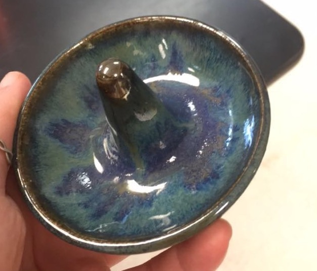
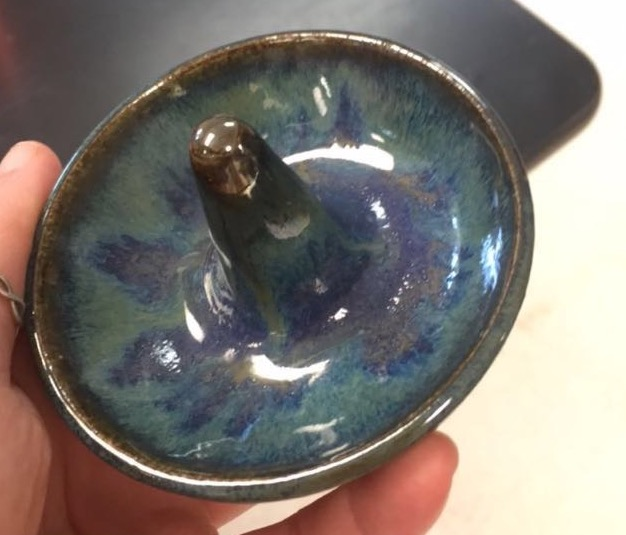
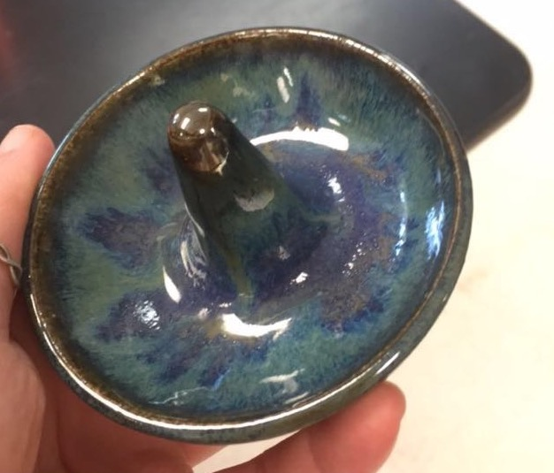

I have enjoyed making pottery ever since I volunteered a summer art camp in middle school. I took pottery classes throughout highschool, and did an independent study when I ran out of classes to take. I ended up winning first place in the utilitarian category at a state-wide art show at the Maine College of Art just this past spring. Below are a few pieces that I've made throughout my time in highschool.

I have just recently begun using henna. I started in the summer of 2016, going into my senior year of highschool. Since then many of my friends and classmates have paid me to give them henna, which I very much enjoy.